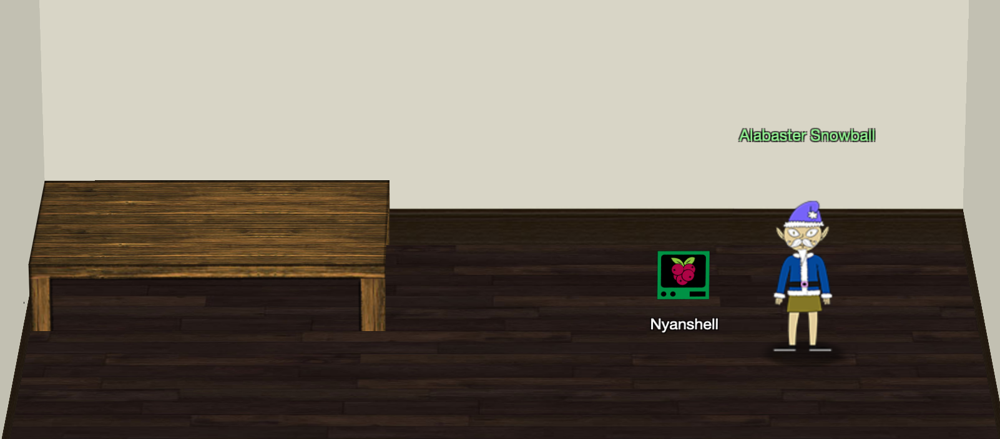
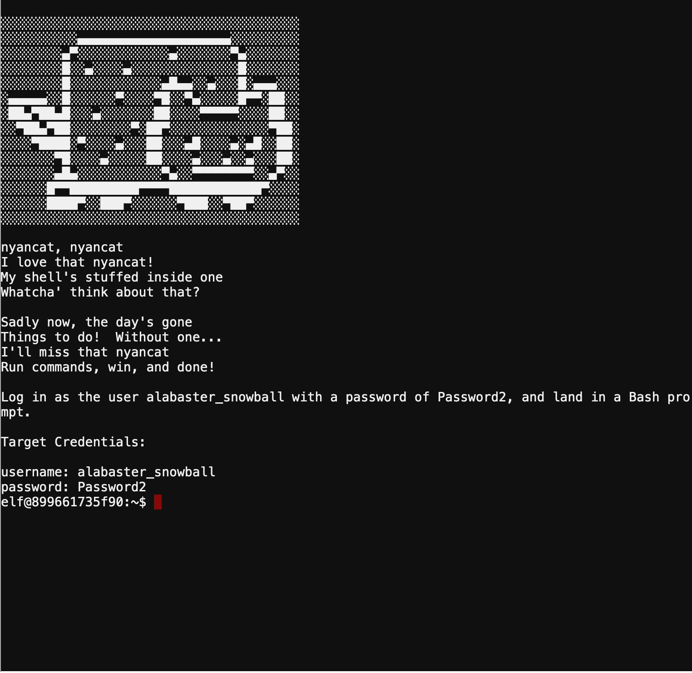
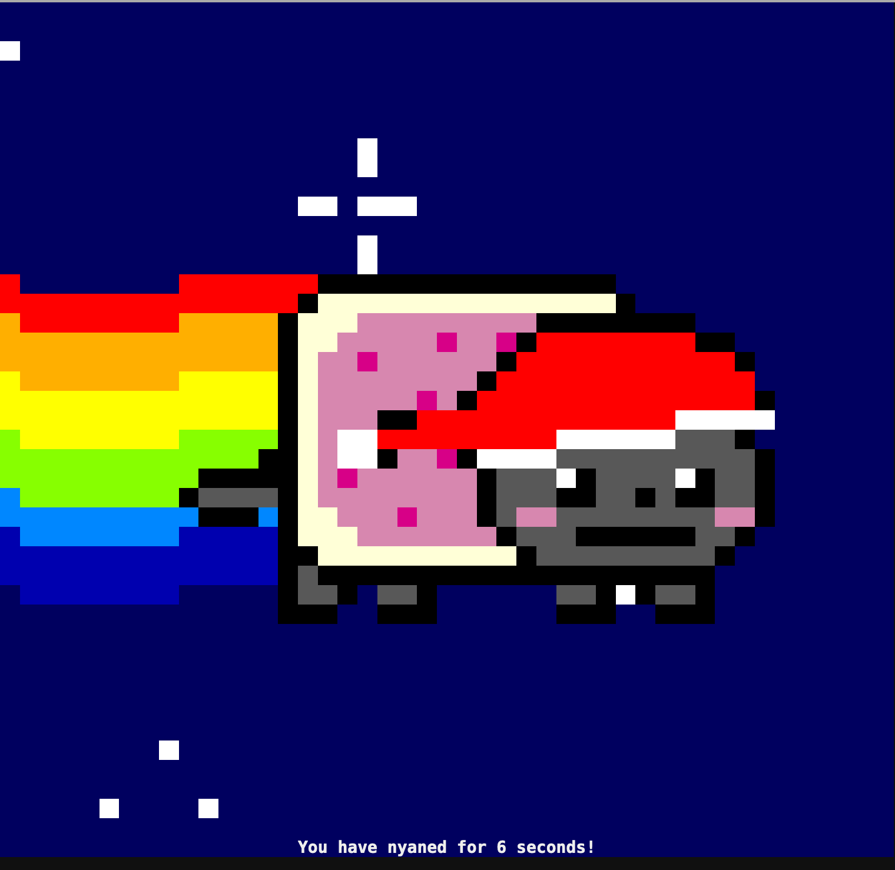

Nyanshell
🎮 Nyanshell¶
📍 The Speaker UNpreparedness Room

🧝🏻♂️ Alabaster Snowball
Welcome to the Speaker UNpreparedness Room!
My name's Alabaster Snowball and I could use a hand.
I'm trying to log into this terminal, but something's gone horribly wrong.
Every time I try to log in, I get accosted with ... a hatted cat and a toaster pastry?
I thought my shell was Bash, not flying feline.
When I try to overwrite it with something else, I get permission errors.
Have you heard any chatter about immutable files? And what issudo -l telling me?
Chatter?
sudo -l says I can run a command as root. What does it do?
User's Shells
On Linux, a user's shell is determined by the contents of /etc/passwd.
Log in as the user alabaster_snowball with a password of Password2, and land in a Bash prompt
⚡️ Solution¶
When You open the Cranberry Pi terminal, You see:

if you try to login using the credentials provided:
su alabaster_snowball
You will get nyancat!

Let's check user's shell by reading the /etc/passwd file:
cat /etc/passwd
root:x:0:0:root:/root:/bin/bash
daemon:x:1:1:daemon:/usr/sbin:/usr/sbin/nologin
bin:x:2:2:bin:/bin:/usr/sbin/nologin
sys:x:3:3:sys:/dev:/usr/sbin/nologin
sync:x:4:65534:sync:/bin:/bin/sync
games:x:5:60:games:/usr/games:/usr/sbin/nologin
man:x:6:12:man:/var/cache/man:/usr/sbin/nologin
lp:x:7:7:lp:/var/spool/lpd:/usr/sbin/nologin
mail:x:8:8:mail:/var/mail:/usr/sbin/nologin
news:x:9:9:news:/var/spool/news:/usr/sbin/nologin
uucp:x:10:10:uucp:/var/spool/uucp:/usr/sbin/nologin
proxy:x:13:13:proxy:/bin:/usr/sbin/nologin
www-data:x:33:33:www-data:/var/www:/usr/sbin/nologin
backup:x:34:34:backup:/var/backups:/usr/sbin/nologin
list:x:38:38:Mailing List Manager:/var/list:/usr/sbin/nologin
irc:x:39:39:ircd:/var/run/ircd:/usr/sbin/nologin
gnats:x:41:41:Gnats Bug-Reporting System (admin):/var/lib/gnats:/usr/sbin/nologin
nobody:x:65534:65534:nobody:/nonexistent:/usr/sbin/nologin
_apt:x:100:65534::/nonexistent:/usr/sbin/nologin
elf:x:1000:1000::/home/elf:/bin/bash
alabaster_snowball:x:1001:1001::/home/alabaster_snowball:/bin/nsh
so we need to change this shell /bin/nsh to normal user shell.
check which commands you can run as root
sudo -l
Matching Defaults entries for elf on 3bd3621ef6cc:
env_reset, mail_badpass,
secure_path=/usr/local/sbin\:/usr/local/bin\:/usr/sbin\:/usr/bin\:/sbin\:/bin
User elf may run the following commands on 3bd3621ef6cc:
(root) NOPASSWD: /usr/bin/chattr
So we can run chattr command. But which file do we need to use it on?
chattr is a command line Linux utility that is used to set/unset certain attributes to a file in Linux system to secure accidental deletion or modification of important files and folders, even though you are logged in as a root user.1
Let's find other clues , check the root directory:
cd /
ls
You will find interesting file entrypoint.sh, read the content:
cat entrypoint.sh
#!/bin/bash chmod +x /bin/nsh chattr +i /bin/nsh echo "export RESOURCE_ID=$RESOURCE_ID" >> /home/alabaster_snowball/.bashrc echo "/home/alabaster_snowball/success" >> /home/alabaster_snowball/.bashrc su - elf
So the file /bin/nsh is made immutable by chattr command with +i flag
Verify the immutable status of the files using ‘lsattr‘ command:
lsattr /bin/nsh
----i---------e---- /bin/nsh
remove immutable bit from the file
sudo -u root chattr -i /bin/nsh
Let’s verify the attribute:
lsattr /bin/nsh
--------------e---- /bin/nsh
Now we can overwrite the file content, let's replace it with normal shell
cat /bin/bash > /bin/nsh
try to log in now as the user alabaster_snowball with a password of Password2:
su alabaster_snowball
You have completed the Nyanshell challenge! 🎉
🧝🏻♂️ Alabaster Snowball
Who would do such a thing?? Well, it IS a good looking cat.
Have you heard about the Frido Sleigh contest? There are some serious prizes up for grabs.
The content is strictly for elves. Only elves can pass the CAPTEHA challenge required to enter.
I heard there was a talk at KCII about using machine learning to defeat challenges like this.
I don't think anything could ever beat an elf though!
🎓 What you've learned¶
- Using
chattr,lsattr,sudo -lcommand - Checking users shell from
/etc/passwd.